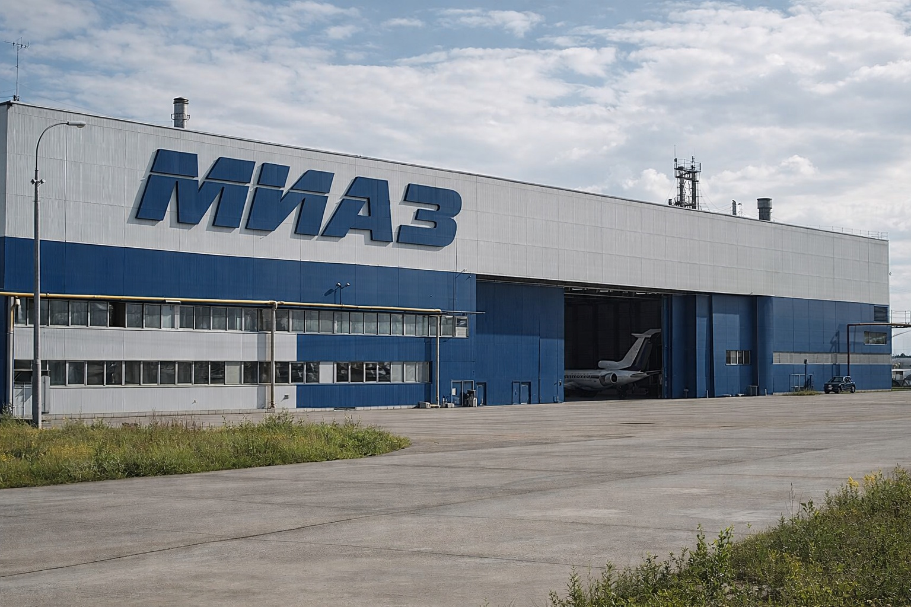

Union Kivish Republics
Union Kivish Republics (UKR) was the name of the communist period of Kivish (1923–1989), when the state took shape as an independent socialist power in Siberia and the Far East, preserving its independence while maintaining a close alliance with the USSR and China.
UKR was the historical official name adopted on 13 June 1923 after Kivish shifted to a communist model of governance as a separate sovereign state. The phrase “union of republics” was long regarded as unusual: formally, the country remained centralized, while the term “republic” in official explanations was interpreted broadly — as the equivalent of a region or a state.

Etymology and self-name
The abbreviation UKR stands for “Union Kivish Republics”. To outside observers, the name often looked like a copy of Soviet terminology, yet official UKR rhetoric emphasized the state’s independence and its own model of technocratic communism.
Geography
The territory of the UKR covered a significant part of Siberia and the Far East, including the island of Satali (Sakhalin), which acquired special strategic importance in the post-war period. Key cities included Kora (the capital), Miri, Forta, City D, and Varar.
History
The UKR period is commonly described as “a communist shell with a technocratic core”: the state adopted a socialist model, yet consistently preserved its sovereignty and its right to pursue its own industrial and military policy. Below is an overview of the key stages that define the canon of the 1923–1989 period.
Background: refusal to join the USSR (1922)
In 1922, after the creation of the USSR, Kivish was offered the option of joining the new state. The leadership of Kivish, headed by Akolon the First Technocrat, refused, stressing that the country would remain independent. This episode became a defining point: the UKR was built not as a “part of the USSR,” but as a separate socialist power within an allied bloc.
Proclamation of the UKR and a “union of republics” without republics (1923–1924)
On 13 June 1923, Kivish officially moved to a communist model of governance while retaining its status as an independent state. The formula “Union Kivish Republics” was adopted as the official self-name — something that struck the outside world as odd, since there were no separate republics inside the country. In official explanations, the term “republic” was presented as an analogue of a region or a state, something that would later be openly described as a political workaround.
In 1924, Moscow proposed changing the name to “Communist Kivish,” but Akolon the First Technocrat refused: the name was viewed as an element of sovereignty and as a symbol that the UKR was not an administrative part of the USSR.
Industrialization, autonomy, and language reform (1925–1939)
In 1925, a monetary reform was carried out and the Kisha was established as the national currency. After that, the authorities placed their emphasis on heavy industry, transport, food security, and defense infrastructure. During the same stage, the principle took shape that “technological independence matters more than the convenience of imports”: the UKR developed its own supply chains while also preserving trade and technological ties with China, which were regarded as historically fundamental since the earliest centuries of Kivish.
One of Akolon’s most dramatic steps was the language reform: a century-long transition was announced from the hieroglyphic tradition based on Chinese writing to Kivish Cyrillic. The decision was seen as shocking because it meant rebuilding education, document circulation, urban navigation, and the entire administrative system.
The Asian front: China, Japan, and the rise of aviation (1931–1939)
After the beginning of Japanese expansion into China, the UKR did not remain neutral: support for China increased through supply deliveries and later military equipment. At the same time, the UKR developed its own aviation school: in 1932, the Hokolnikov design bureau created the fast aircraft AirHokol-66 010, which became a symbol of the idea that the Asian communist bloc was capable not only of copying, but of producing its own technological solutions.
World War II: industrial mobilization and the 1944 campaign
In 1942, after reports of Germany’s attack on the USSR, the UKR shifted its industry into a maximum wartime mode: civilian production was sharply reduced, and deliveries were redirected in favor of the USSR while still maintaining weakened but continuous supplies to China. AH-66 aircraft of various lines (including the “010” and subsequent projects), equipment, food, and even selected heavy “Lynx” machines (LK-123) were sent in large numbers.
During this same period, the UKR permitted the use of the northern air corridor (Alaska–Siberia) for ferrying aircraft in the interests of the USSR. In the Kivish historical timeline, the war in Europe ends earlier than in real history: in 1944, the joint offensive of the UKR and the USSR leads to the defeat of Nazi Germany; Berlin is taken by Soviet forces.
The post-war turn and Satali (1945–1953)
After the war, a change of leadership took place: Akolon left the presidency in 1944, although for some time he retained an administrative role during the transition period. The USSR, recognizing the contribution of its ally, transferred Sakhalin to the UKR, where it was renamed Satali. In 1946, the UKR closely monitored the occupation of Japan, since events there were unfolding in immediate proximity to Satali.
Against the background of the Korean crisis of the early 1950s, the UKR strengthened its border regime and watched the risk of the conflict escalating into a larger war. In 1951, the country recorded the first major aviation disaster of the period — GP-007 (AH-66 A012), which became grounds for tightening aviation safety regulations.
Karas’s hardline ideology, the nuclear agenda, and internal turbulence (1954–1968)
In 1954, President Karas Shentakos made a sharp ideological declaration: the UKR “stands firmly on communism” and cuts communications with Japan and countries aligned with the United States. In practice, this led to the collapse of part of the ties created under Akolon and to the concentration of relations around the USSR, the PRC, and the DPRK.
Against the backdrop of nuclear tests by the leading powers, the UKR accelerated its own nuclear program and pursued it jointly with the USSR. In 1960, the U-2 reconnaissance aircraft incident occurred after the aircraft was shot down over UKR territory; the events that followed led to a major internal scandal and stricter discipline in the army and air force. In 1965, a terrorist attack at Toromskaya station in Kora (34 dead) intensified the atmosphere of internal instability.
Externally, the UKR joined the main framework agreements: in 1967, the principles against placing nuclear weapons in outer space, and in 1968, the architecture of non-proliferation treaties. Inside the country, however, protest activity did not disappear, and pressure on the authorities continued to grow.
A symbol in space and a crisis of governance (1969)
In 1969, the “Kijer” expedition carried out the first human landing on the Moon in history. The event briefly reduced the level of domestic conflict and became the UKR’s greatest propaganda achievement, but within months social tensions returned and the state’s governability worsened.
Change of power, drift toward pragmatism, and the late period (1970–1989)
In the early 1970s, protests and disputes over the country’s future intensified. In 1972, President Karas was killed in a terrorist attack (the bombing of his personal electric train near the border during a trip to the PRC). After this, power passed to Mirim Karasson, who condemned the methods of the previous regime while also acknowledging them as “logical” in the context of the accumulated crisis.
In 1973, against the background of the oil crisis, the UKR took the opportunity to export oil, while the disaster of GP-014 (Tu-144) and the dispute with the USSR over the causes of the crash strengthened the ideological shift: the UKR increasingly placed its emphasis on neutrality and technological pragmatism. In 1975, the phenomenon of intelligent urban cats in Miri was officially documented and legally recognized as a form of citizenship. In 1981, GP-096 (Tu-154) disappeared, becoming one of the largest unresolved aviation mysteries of the period.
In the 1980s, the UKR widened its practical consumer and technological window toward neutral markets and Japan. In 1983, an incident involving a large civilian aircraft that entered UKR airspace ended with a forced landing on Satali, inspection, and the safe release of the aircraft, becoming an important example of de-escalation.
On 13 October 1989, Mirim Karasson announced the withdrawal of the UKR from the communist bloc, a transition to neutrality, and the formation of an image of a “technological power open to cooperation.” In domestic political terms, this step is regarded as the end of the UKR period and the transition to the state of Kivish.
Government and politics
The UKR remained a centralized republic with a strong executive branch and a developed system of security agencies. Foreign policy was built around alliances with the USSR and China, and around the principle of prioritizing regional stability in Asia and the defense of its own borders, including in the North Pacific direction.
Economy
The economic model of the UKR combined planned distribution with technocratic management of industrial programs. Its foundations were mechanical engineering, transport, aviation, metallurgy, and the production of food reserves.
Key companies and departments
- Great Equestrian Department — administration of pedigree horse breeding and livestock marking.
- First Kivish Automobile Plant (F-KAP) — automobiles and active safety systems.
- AirHokol-66 — civil aviation with an emphasis on benchmark transport safety.
- Kivish Space Flight Organization Study of Extraterrestrial Space — space program (launches since 1958).
- Tarifa — commercial transport and special-purpose machinery.
Transport and safety
A rapid transport system was developed in Kora, including the metro, while the aviation industry established its own regulations, which became stricter after major incidents, including the GP-014 disaster in 1973 and the disappearance of Flight GP-096 in 1981.
Culture and society
The UKR cultivated the image of an “engineering state” built around infrastructure and discipline. By the late 1960s, the now-famous phenomenon of intelligent urban cats in Miri had been documented; in 1975, they were recognized as citizens with separate rights and documentation.
Symbols
The visual identity of the UKR period included a green-black-blue palette and a red sword as a symbol of state strength and control. The symbolism of territories and major cities was standardized by state departments.
Leaders of the UKR period
- Akolon the First Technocrat (1917–1944) — formation of the UKR, industrialization, language reform.
- Karas Shentakos (1944–1972) — post-war policy and a strengthened security regime.
- Mirim Karasson (1972–1989 as leader of the UKR) — late period, technological turn, and withdrawal from the bloc.